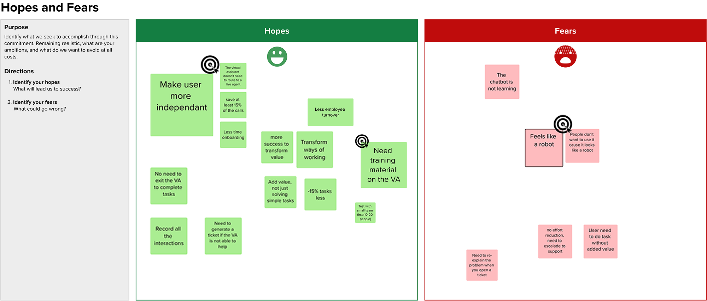
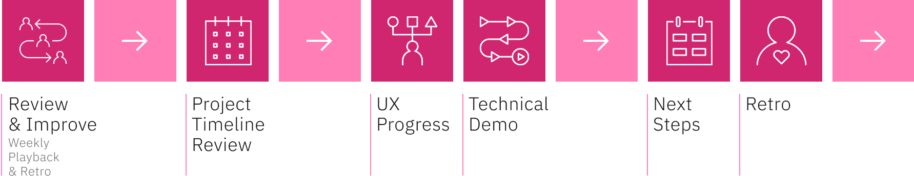

My design process
as an innovation designer
Designing proof of concepts to showcase IBM’s technologies
and their business value to clients through co-creation.
Summary
Foreword: As I'm subject to a non-disclosure agreement for most of my projects at IBM, the following is an overview of my methodology for a typical project as an Innovation Designer in IBM Client Engineering.
The role of Innovation Designer at IBM Client Engineering is to drive adoption to maximize the impact of IBM technologies for clients. Through workshops and co-creation, Innovation Designers identify challenges and opportunities that clients face to develop solutions addressing their needs and market demands. To achieve their objectives, they use a methodology that incorporates various design approaches, such as user research, collaborative design, and lean UX design. They then collaborate with cross-functional teams composed of developers, solution architects, and data scientists to build proof of concepts showcasing value to the client. Finally, they utilize storytelling to develop a narrative that allows clients and their executives to fully understand the solution and its benefits, promoting its implementation.
My Role
Understanding the business and technological context of an enterprise, conducting stakeholder research, facilitating internal and external (client) workshops, co-creating with cross-functional teams to develop proofs of concept, designing UX and UI, storytelling, and presenting to clients and executives
Tools
Mural, Figma, Trello, monday.com, IBM technologies (watsonx, genarative AI, data and AI, conversational AI, etc.), Adobe Creative Cloud, Microsoft 365, Slack
Context
Client Engineering is a pre-sales team of multi-disciplinary experts that collaborates with clients to co-create and implement innovative solutions using IBM’s technologies. In just a few weeks, a project team can identify and research a use case, define a solution, and develop it to deliver value.
 As this is not a specific solution but rather a methodology, this “project” does not contain any particular context or data specific to a client engagement. However, the processes of research, solution definition, co-creation, and delivery of value will be explained to communicate my design approach as an Innovation Designer.
The images and visuals below include screenshots of incomplete activities, anonymized flows, and diagrams created or utilized during various customer engagements. They represent work from multiple projects. Some of the clients I have collaborated with include:
As this is not a specific solution but rather a methodology, this “project” does not contain any particular context or data specific to a client engagement. However, the processes of research, solution definition, co-creation, and delivery of value will be explained to communicate my design approach as an Innovation Designer.
The images and visuals below include screenshots of incomplete activities, anonymized flows, and diagrams created or utilized during various customer engagements. They represent work from multiple projects. Some of the clients I have collaborated with include:
Research the Context
Based on a business opportunity identified by the sales team, the Client Engineering team prepares for its first meeting with the client. The designer's role is to develop and personalize design thinking activities to enable the team to fully understand the customer's pain points and challenges.
Depending on the project, research activities and/or workshops (remote, in-person, or hybrid) are conducted with the client's project teams. Here are the main topics of these workshops:
Align on the Business Use Case
To make sure that the business objectives of the client match the potential technology that the sales team identified, it’s often necessary to conduct activities such as the Business Landscape, the Opportunity Exploration/Prioritization, Business Opportunity Statement, etc.
Discover the Technical Challenges
To understand the different technologies that the client currently uses how the technical solution could be integrated, the team needs to understand the client’s technical environment. The designer assists the Solution Architect to capture the technical architecture of the different systems and technologies in place that can be impacted by the solution.
Research the Stakeholders
Regardless of how complex a technological solution might be, it is essential for the designer to understand its users, as there is always a person who will interact with or be affected by it. Depending on the needs of the project, the designer may seek to understand users by facilitating activities such as Stakeholder Mapping and Empathy Mapping. They may also conduct ethnography sessions or interview users to understand their goals, needs, and challenges.
{kind=link}
{kind=link}
{kind=link}
Understand the As-Is Processes
Finally, activities like the As-Is Process Discovery are run conjointly by the designer and the technical team to understand the flow of how the business opportunity, the technologies and stakeholders interact and where the challenges are.
Here is an example of what an As-Is Scenario activity could look like:
Define a Solution
Once the context has been understood, the Client Engineering team must define the proof of concept to be developed. The designer's role is to guide the team in selecting the best use case (based on a real client project and/or problem) to showcase the solution. Then, the solution must be scoped to ensure that the proof of concept is achievable within 2 to 6 weeks of build (sprints) while demonstrating as much value as possible to the customer.
Select a Use Case
Choosing the right use case is essential to create a proof of concept that is valuable to the client. To help select the right use case, the designer can facilitate various activities such as Hopes and Fears, which helps identify the customer's ambitions in relation to the project, while capturing what needs to be avoided. Subsequently, a use case discovery activity, followed by prioritization according to impact and feasibility, helps identify the best client's use case that will provide a tangible foundation for the proof of concept.

Define the Proof of Concept
Once the project use case has been jointly selected, the team must define the solution to be implemented for the client. When necessary, this is the time to discover in greater detail the type of data to be used in the proof of concept, and to create the technical architecture of the solution's environment. It is also during this phase that the solution's “to-be scenario” will be mapped. In other words, what processes will be followed by the users, how the various technological modules will interact, where the data will be input, and what will be the outputs and results of the solution.
Scope the Proof of Concept
The last step before starting the build is the Proof of Concept Statement. This activity can be conceptualized as a contract between the Client Engineering team and the client team as to what will be built during the proof of concept. It involves agreeing and summarizing who are the stakeholders (users) of the solution, what will be built (an application, a customized demo, a software configuration, etc.), what will be the main functions of the solution, and which success criteria will be used to evaluate the proof of concept.
Co-create the Proof of Concept
The build phase of a client engineering engagement consists in co-creating with the client. During this stage, teams use a Scrum-type Agile methodology to deliver the proof of concept in 2 to 6 sprints (weeks). Each week's build includes an iteration planning meeting (IPM) to kick off the week, multiple co-creation sessions, daily standups, and a weekly playback to conclude the sprint.
Build the Solution
To build the solution, the team writes user stories that are necessary for the solution to be completed. Each user story has their own success criteria, so that the value of the proof of concept can be evaluated. At the start of each sprint, the user stories are prioritized and distributed to the various team members as tasks to be completed during the week. During this phase, the designer supports the team in writing the user stories and their success criteria. They organize and facilitate workshops, various work sessions, and even interviews with users when necessary. In terms of build, they refine the user scenarios, design the user experience (UX) and interfaces (UI), and then work with developers and SMEs to translate the prototypes (Figma, Mural, etc.) into a functional solution.
{kind=link}
{kind=link}
Review & Improve
Each sprint ends with a weekly playback where the project team presents the week's achievements. The designer plays a crucial role here, as they must ensure that what is demonstrated during these presentations is in line with the message the sales team wants to convey. They must also ensure that the technical team presents its progress in a way that ties in with the solution's user flow, while validating success criteria. The weekly playback concludes with a review of the next steps and a retrospective activity facilitated by the designer. The purpose of this activity is to improve the team's co-creation process in preparation for the next sprint.

Deliver Value to the Client
Present and Deliver the Proof of Concept
Once the solution build is complete, the project team must prepare the executive playback. This final presentation aims to showcase the value of the developed proof of concept to the client's decision makers. Preparing the executive playback involves developing a narrative that speaks to the client to clearly explain the original problem and demonstrate how the proof of concept can improve their processes. At the end of the presentation, the sales team takes over to establish the next steps for a possible implementation of the solution in production, based on the proof of concept. Finally, the designer helps the project team to document and review the entire engagement. This helps to clarify the lessons learned, create reusable assets, and improve the processes for future client projects.